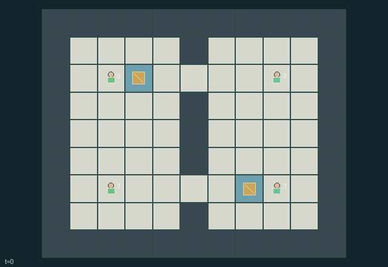

GI157 · Ghostlight Tag

Original recording scope: 公共展示视角 · Mode: 固定脚本演示
Additional generated state replay (different trajectory / full-state debug)

Coordinate beacon control, cover, pursuit, decoy placement and rescues to capture both opposing players simultaneously.
Identity and original contract
4 independently actionable roles; 14 discrete commands per role; 171 native observation columns per role; original horizon 128 steps. Declared per-step reward range: -2 to 2. Observation regime: partially_observable.
Source SHA-256: a48d44379f9cdc85b5ee2bcda19d1c06a5e98b0e6ea29cd601f5b11d918674bd
The objective, rewards, population, map and horizon remain original. A preview is not a success claim.
Objective and gameplay
Coordinate beacon control, cover, pursuit, decoy placement and rescues to capture both opposing players simultaneously.
Teammates share information, cover and rescues. Beacons give radar and consumable protection; enemy decoys suppress detection and wards and can consume a pursuer move by stunning it at a real cell. Conflicting capture intentions resolve simultaneously.
- Teams are 0/1 versus 2/3. Teammates share telemetry; ordinary opponent sight has radius two.
- A beacon with at least two charge grants owner-team radar within four cells of the beacon.
- A nearby enemy decoy jams ordinary/radar detection, but adjacent opponents always remain visible.
- The real decoy also jams enemy wards within two cells; it has six ticks of life and can be steered.
- Trying to enter an enemy decoy consumes it, costs extra stamina and stuns the pursuer without movement.
- Tagging chooses one adjacent opponent. An adjacent covering teammate or unjammed charged friendly beacon can prevent capture.
- Tag decisions are simultaneous. A newly captured rescuer cannot rescue, while a valid rescue frees an already captured teammate.
- Captured or stunned players retain action zero and stay physically on the map. Captured teammates can return through rescue.
- Both opponents captured ends naturally; simultaneous full capture is a draw, and horizon truncation does not invent a winner.
Ending: The game terminates when either team has both players captured after the simultaneous capture/rescue phase. If both teams are fully captured on that step, winner remains -1 for a draw. A horizon of 128 otherwise truncates without assigning a winner.
What this game explores
Information, sensing & communication: Who knows a fact, when it was measured, and whether it was communicated are separate state variables. Test memory or communication using only the same role-visible evidence.
Joint transport & shared access: Positions, load geometry, occupancy and persistent access constrain whose action can succeed next. Distinguish physical handoff, shared controls and simultaneous force from a cosmetic cooperation label.
Team opposition & interception: Cooperation within a team can coexist with opposition between teams. Preserve team membership, capture and possession rules, and report each team's outcomes instead of assuming a single shared return.
These are questions supported by rule structure, not observed learning effects.
Play it: operating walkthrough
crucibles play --game gi157Keep Python running and open its printed address. Select this game, set a seed and press Create session. The game itself is always English.
Assign a role range to Host with Assign / take over, or Assign all roles. Invite a second participant with Create player invitation, then assign a disjoint subset. Every original role is available.
For every owned role choose a legal command and press Queue. Arrow keys / WASD queue a declared directional action for the current role camera when available. Space or Advance one joint step advances everyone together. Non-directional games use the selectors.
Unqueued roles use the labelled untrained uniform-legal policy. Take over or release roles before the next step without resetting. Full-state debug is privileged and permanently logged; role cameras preserve permissions. Close the session to retain logs. Server restart does not restore sessions.
Complete command reference
IDs and English labels exactly match the manifest. Availability depends on role, resources, location and phase. An available action can still have no productive effect.
0·Rest and recover two stamina; only action while captured or stunned
1·Move north and face north
2·Move east and face east
3·Move south and face south
4·Move west and face west
5·Attempt to tag one adjacent opponent; spend two stamina
6·Channel nearest adjacent beacon to charge own claim or drain enemy claim
7·Deploy own team decoy one cell along facing; spend two on success
8·Steer own team decoy north; spend one on success
9·Steer own team decoy east; spend one on success
10·Steer own team decoy south; spend one on success
11·Steer own team decoy west; spend one on success
12·Rescue adjacent previously captured teammate; spend two stamina
13·Cover an adjacent teammate from tags this tick; spend one stamina
Roles and capability identifiers
These original role names describe capabilities, not interchangeable skins. Check each owned role's legal selector before planning handoffs.
agent_0·Amber teammate 0
agent_1·Amber teammate 1
agent_2·Indigo teammate 2
agent_3·Indigo teammate 3
Information and observation permissions
Own-team telemetry, beacon state and capture/rescue identity notices are public to the relevant observation channels. Opponents require direct range or friendly beacon radar and may be hidden by enemy jammers. Adjacent opponents are always visible. Decoys are explicitly labeled when seen; no false indistinguishability claim is made.
The GIF is full-state debug and may reveal hidden entities or private state. Train on obs[agent], not the picture, state tree or another role's private row. Field slices and visibility are in the original manifest.
Reinforcement-learning integration
import jax
from crucibles_jaxmarl import make
env = make("gi157")
key = jax.random.PRNGKey(0)
key, rk, ak, sk = jax.random.split(key, 4)
obs, state = jax.jit(env.reset)(rk)
actions = env.sample_actions(ak, state)
obs, state, rewards, dones, info = jax.jit(env.step_env)(sk, state, actions)
done = dones["__all__"]Observations are float32 vectors of width 171; actions are scalar int32; masks have 14 entries. Supply all 4 roles each transition. Masked sampling is an engineering reference, not a trained learner.
step_env retains terminal data without reset. step performs outer autoreset and keeps terminal data in info["raw_state"] and info["raw_observation"]. Use dones["__all__"] for episode boundaries; separate completion, failure and time limit in analysis.
JIT or vmap equal identities and shapes. Split independent reset, policy and transition keys. Group different shapes explicitly; do not shrink the population or horizon. Host rendering stays outside training.
Training questions and fair evaluation
Define valid completion from the objective before fitting. Preserve original rewards and also report real deliveries/services, losses, resource state, unresolved episodes and per-role returns. Animation is not a reward signal.
Who knows a fact, when it was measured, and whether it was communicated are separate state variables. Test memory or communication using only the same role-visible evidence.
Positions, load geometry, occupancy and persistent access constrain whose action can succeed next. Distinguish physical handoff, shared controls and simultaneous force from a cosmetic cooperation label.
Cooperation within a team can coexist with opposition between teams. Preserve team membership, capture and possession rules, and report each team's outcomes instead of assuming a single shared return.
Compare memory, communication or centralized critics under matched actor information. Declare critic access; keep actor inputs role-filtered. Match partner/opponent distributions, masks, compute and checkpoint selection. Final tests never enter fitting or selection.
Independent training runs or source-pairing blocks are inferential units; episodes from one policy are not independent training replications. Save hashes, keys, versions, device, time and cost. Negative, zero, failed and indeterminate outcomes are valid. No trained checkpoint or target score is supplied.
Classification and evidence
Overlapping editorial labels are reading aids, not proof of novelty, difficulty, strategic equivalence or learning effects.
- Information, sensing & communication
- Evidence
manifest.task.interaction: Teammates share information, cover and rescues. Beacons give radar and consumable protection; enemy decoys suppress detection and wards and can consume a pursuer move by stunning it at a real cell. Conflicting capture intentions resolve simultaneously.
- Evidence
manifest.task.observation_access: Own-team telemetry, beacon state and capture/rescue identity notices are public to the relevant observation channels. Opponents require direct range or friendly beacon radar and may be hidden by enemy jammers. Adjacent opponents are always visible. Decoys are explicitly labeled when seen; no false indistinguishability claim is made.
- Evidence
scene.rules.1: A beacon with at least two charge grants owner-team radar within four cells of the beacon.
- Joint transport & shared access
- Evidence
manifest.task.objective: Coordinate beacon control, cover, pursuit, decoy placement and rescues to capture both opposing players simultaneously.
- Team opposition & interception
- Evidence
manifest.task.objective: Coordinate beacon control, cover, pursuit, decoy placement and rescues to capture both opposing players simultaneously.
- Evidence
manifest.task.interaction: Teammates share information, cover and rescues. Beacons give radar and consumable protection; enemy decoys suppress detection and wards and can consume a pursuer move by stunning it at a real cell. Conflicting capture intentions resolve simultaneously.
- Evidence
manifest.task.observation_access: Own-team telemetry, beacon state and capture/rescue identity notices are public to the relevant observation channels. Opponents require direct range or friendly beacon radar and may be hidden by enemy jammers. Adjacent opponents are always visible. Decoys are explicitly labeled when seen; no false indistinguishability claim is made.
Source, receipts and preview limits
The additional generated state GIF replays saved untrained legal actions through the original kernel. At most 25 actual endpoints include initial and terminal state; no invented interpolation. It is full-state debug, not the role observation. Where an original scene preview exists, it is displayed first with its own recorded information scope. The two recordings may use different trajectories and views.
Original source, observation slices, manifest and mechanism
Native receipt · Presentation receipt
Engineering passes do not establish learning. Nonzero floating differences remain recorded and undetermined; no new tolerance was introduced. Human scores remain unverified.